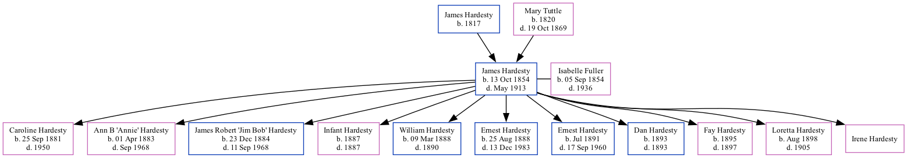

James Franklin Hardesty 1854 - 1913
[ Home ] | [ Surnames Index ] | [ Family History ]The child of James Hardesty and Mary Tuttle, was born in Louisa, Iowa, USA on Oct 13, 18541,2 and married Isabelle Fuller (with whom he had 11 children: Caroline Calla, Ann B. "Annie", James Robert "Jim Bob", Infant, William A, Ernest Roy, Ernest, Dan, Fay Agnes, Loretta and Irene) in Minneapolis, Ottawa, Kansas on Jul 9, 18801.
During his life, he was living in Douglas, Douglas, Nebraska in 19001 and in 19102.
He died in May 1913 in Ottawa, Ottawa, Kansas, USA (buried in Lamar Cemetery, Ottawa County, Kansas).
Parents
- James was born in 1817
- Mary Ann was born in 1820
Children
- Caroline Calla was born on Sep 25, 1881
- Ann B. "Annie" was born on Apr 1, 1883
- James Robert "Jim Bob" was born on Dec 23, 1884
- Infant was born in 1887
- William A was born on Mar 9, 1888
- Ernest Roy was born on Aug 25, 1888
- Ernest was born in Jul 1891
- Dan was born in 1893
- Fay Agnes was born in 1895
- Loretta was born in Aug 1898
- Irene
Citations
- 1900 United States Federal Census Ancestry.com Operations Inc (Age: 46; Marital Status: Married; Relation to Head of House: Head)
- 1910 United States Federal Census Ancestry.com Operations Inc (Age in 1910: 52; Marital Status: Married; Relation to Head of House: Head)
Family Tree
Data (GEDCOM) maintained by Jay Weston Hannah, Omaha, Nebraska, USA.
Website generated by ged2site. Last updated on Jun 18, 2024.